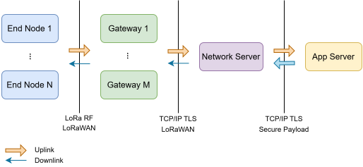
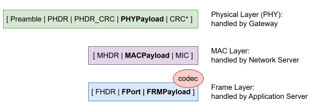
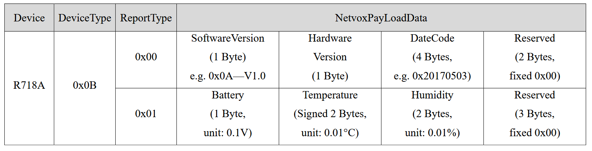
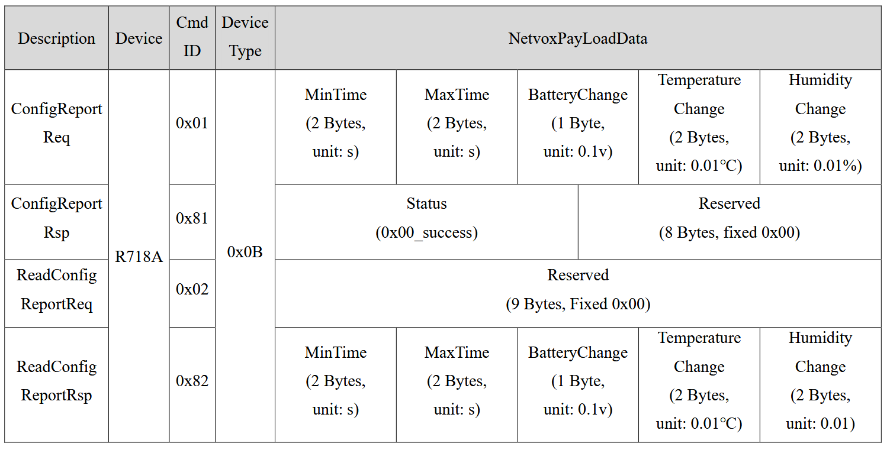

In the Web of Things (WoT), a Binding provides guidance for implementing a specific IoT protocol/platform by defining vocabulary terms that can be used in a TD and rules describing how WoT operations map to protocol interactions. This document proposes a binding for LoRaWAN, defining vocabulary and rules for describing interactions (for now, uplink only) with LoRaWAN end devices via a LoRaWAN “network-facing interface” (typically a local Network Server, gateway bridge, or compatible service endpoint).
More specifically, this document defines a set of vocabulary terms that can be used inside a Thing Description or Thing Model document, and associated rules which allow description of WoT operations using LoRaWAN over the network. Additionally, relevant examples are provided to showcase different vocabulary terms and the associated behavior.
LoRaWAN devices usually transmit measurements asynchronously: devices emit uplinks periodically or on change,
while downlinks are scheduled (often with delivery constraints). A consumer does not poll a sensor on demand;
instead it subscribes to uplinks that the device emits on its own schedule. For that reason, this binding models
uplink values as WoT events, not readable properties, emphasizing subscribeevent.
Each event describes one decoded value. The event data schema says what the value means, while the
event form carries the lorav: terms that say how that value is found in the payload bytes.
A Thing Description using this binding conforms when all of the following are true:
https://www.w3.org/2026/wot/lorawan# in
@context.
lorav: terms are placed on the Thing itself.lorav: terms are placed on event forms.AppKey and NwkKey are declared as WoT security schemes.
LoRaWAN uses a star-of-stars topology: end devices transmit radio frames, gateways forward them, the network server handles MAC-layer processing, and the application server exposes the decoded application payload (plus a Join Server for OTAA activation). Understanding this separation of concerns is necessary background for the binding defined below.
AppSKey) and generates downlink application payloads, which it passes to the Network Server for
delivery. A network may have multiple Application Servers for different applications.
NwkSKey to the NS, AppSKey to the AS).

The application payload is obtained only after LoRaWAN framing, security, and routing are handled by the network infrastructure.
A LoRaWAN uplink is built from three nested layers: Physical Layer, MAC Layer, and Frame Layer. Each layer is handled by a different component. No single component sees the message in fully decoded form — this is why a WoT Consumer cannot simply "read" a LoRaWAN device the way it would read an HTTP resource.

preamble, PHY
header (PHDR), header cyclic redundancy check (PHDR_CRC), and the
PHYPayload itself. This layer is terminated at the Gateway, which demodulates
the radio signal and hands the raw PHYPayload bytes — together with radio metadata such as
SNR, frequency, and spreading factor — to the Network Server over the backhaul. The gateway never
inspects anything inside PHYPayload.
PHYPayload decomposes into MAC Header (MHDR) |
MACPayload | Message Integrity Code (MIC). This layer is terminated at the
Network Server, which verifies the MIC using NwkSKey, deduplicates
copies received via multiple gateways, processes Frame Options (FOpts) MAC commands (e.g.,
Adaptive Data Rate (ADR)), and tracks Frame Count (FCnt) for replay protection.
MACPayload contains the Frame Header
(FHDR), Frame Port (FPort), and FRMPayload. FRMPayload is
encrypted with AppSKey whenever FPort > 0. This layer is terminated at the
Application Server, which decrypts FRMPayload using AppSKey to
obtain the raw application payload bytes.
Decrypting FRMPayload does not automatically produce structured application data. — It only
recovers the raw byte string that the LoRaWAN end device originally packed into the uplink. Turning those bytes
into typed values, such as temperature, humidity, battery voltage, alarms, counters, or device status, is the
job of a payload codec, applied immediately after FRMPayload decryption, at the
Application Server.
The codec is usually JavaScript functions not defined by LoRaWAN itself, but depends on the device, vendor, firmware version, and configuration. The codec specification is usually published in a device datasheet, a vendor portal, or an online documentation. It may follow a fixed binary layout, a TLV scheme, Cayenne LPP, a ZCL-based encoding, or a vendor-defined user-configurable format.
In the following, we show some examples of common codec schema.
In a fixed binary layout, each byte or group of bytes has a predefined meaning.
Example layout:
| Byte Position | Field | Encoding |
|---|---|---|
Byte 0 |
Report type | Unsigned integer |
Byte 1-2 |
Temperature | Signed or unsigned 16-bit integer, big-endian, scale 0.01 °C |
Byte 3-4 |
Battery voltage | Unsigned 16-bit integer, big-endian, unit mV |
Example payload:
01 07 6B 0C CCDecoding result:
0x01: status report0x076B: raw temperature value 1899, decoded as 18.99 °C0x0CCC: raw battery value 3276, decoded as 3.276 VIt's worth mentioning, as a decoder output is not standardized, it can return any measurement in any unit, as well as any additional information based on the configuration. So the final structured output could look like this:
{ "reportType": "status", "temperatureC": 18.99, "batteryV": 3.276 }
Branching: Some devices use the first byte, or sometimes the FPort, to indicate
the payload type. The remaining bytes are decoded differently depending on that type. An example is provided in
the following section.
A Channel-Type-Value format uses a channel identifier and a type identifier before the value. The value length is not explicitly included. Instead, the type determines how many bytes must be read. A common example of this approach is Cayenne Low Power Payload, often called Cayenne LPP.
Generic structure:
[Channel][Type][Value]Example payload:
01 67 00 EA 02 68 7ADecoding:
| Bytes | Meaning | Decoded Value |
|---|---|---|
01 67 00 EA |
Channel 1, type 0x67 = temperature |
Raw value 234, decoded as 23.4 °C |
02 68 7A |
Channel 2, type 0x68 = relative humidity |
Raw value 122, decoded as 61 %RH |
Final structured output could look like this:
{ "channel1": { "type": "temperature", "value": 23.4, "unit": "°C" }, "channel2": { "type": "humidity", "value": 61, "unit": "%RH" } }The advantages of this schema are compactness and interoperability. The disadvantage is that the decoder must know the type table in advance, which offers limited semantics and flexibility.
In a Type-Length-Value format, often abbreviated as TLV, each field contains a type, an explicit length, and then the value bytes.
Generic structure:
[Type][Length][Value]Example payload:
01 02 01 10Example interpretation:
| Part | Value | Meaning |
|---|---|---|
| Type | 0x01 |
Temperature |
| Length | 0x02 |
Two value bytes follow |
| Value | 0x0110 |
Raw value 272, decoded as 27.2 °C |
TLV is more self-describing than a fixed binary layout because each value includes its own length. This makes it easier to add new field types in future firmware versions. However, it has slightly more overhead because every value carries additional metadata.
Some devices allow users to configure which measurements are sent and in what order. For example, some sensors allow customized extension based on the attached sensors.
The following is an example of a JavaScript function for uplink message decoding from the
Netvox: R718A sensor that decodes a fixed binary
layout with branching based on the fPort and the first byte of the payload. The code snippet is
sourced from
TTN device profile repository.
function decodeUplink(input) {
// Output object — fields are added depending on which fPort and message type is received
var data = {};
// fPort identifies the message type.
// This device uses fPort 6 for sensor data and fPort 7 for command responses.
switch (input.fPort) {
case 6: // ── SENSOR DATA PORT ─────────────────────────────────────────────
// bytes[2] === 0x00 is a special flag meaning this is a VERSION/IDENTITY
// frame, not a regular sensor reading. Sent once on join or on request.
if (input.bytes[2] === 0x00)
{
// bytes[1]: device type identifier, resolved via a getDeviceName() lookup table not shown here
data.Device = getDeviceName(input.bytes[1]);
// bytes[3]: firmware version stored as integer, scaled by 10
// e.g. 0x0F = 15 → 15/10 = 1.5 (meaning v1.5)
data.SWver = input.bytes[3] / 10;
// bytes[4]: hardware revision, raw integer (no scaling)
data.HWver = input.bytes[4];
// bytes[5–8]: manufacture date, each byte is one hex pair of the date string.
// .toString(16) converts the byte to a hex string (e.g. 5 → "5").
// padLeft(..., 2) zero-pads to 2 chars (e.g. "5" → "05"), ensuring
// each byte always contributes exactly 2 characters.
// Concatenated result example: 0x20,0x23,0x12,0x05 → "20231205" (Dec 5, 2023)
data.Datecode = padLeft(input.bytes[5].toString(16), 2)
+ padLeft(input.bytes[6].toString(16), 2)
+ padLeft(input.bytes[7].toString(16), 2)
+ padLeft(input.bytes[8].toString(16), 2);
// Return early — version frames contain no sensor readings
return {
data: data,
};
}
// ── REGULAR SENSOR FRAME (bytes[2] !== 0x00), sent every 15 minutes at the runtime──────────────────────────
// bytes[3]: battery voltage.
// The MSB (0x80 = 10000000) is used as a low-battery flag.
// & 0x80 isolates that single bit; if it is 1, the battery is low.
if (input.bytes[3] & 0x80)
{
// Mask off the flag bit with & 0x7F (01111111) to get the actual voltage value.
// Divide by 10 to get volts (e.g. 0x23 = 35 → 35/10 = 3.5 V).
// Append a warning string so the consumer is immediately aware.
var tmp_v = input.bytes[3] & 0x7F;
data.Volt = (tmp_v / 10).toString() + '(low battery)';
}
else
// No low-battery flag — decode voltage directly (e.g. 0x24 = 36 → 3.6 V)
data.Volt = input.bytes[3] / 10;
data.Device = getDeviceName(input.bytes[1]);
// bytes[4–5]: temperature, encoded as a 16-bit big-endian signed integer,
// scaled by 100 (i.e. 2964 → 29.64 °C, 65436 → −1.00 °C).
//
// Negative temperatures are stored in two's complement:
// the actual range 0x8000–0xFFFF represents −327.68 to −0.01 °C.
// The most significant bit (MSB) of bytes[4] (checked with & 0x80) acts as the sign bit.
if (input.bytes[4] & 0x80) // if MSB is set -> negative temperature
{
// Reassemble the 16-bit raw value from two bytes (big-endian) via bits shifting:
// bytes[4] is the high byte → shift left 8 bits,
// then OR with bytes[5] (low byte) to fill the lower 8 bits.
// Example: bytes[4]=0xFF, bytes[5]=0x9C → 0xFF9C = 65436
var tmpval = (input.bytes[4] << 8 | input.bytes[5]);
// Reverse the two's complement encoding to get the magnitude, then negate.
// 0x10000 (= 65536) is the 16-bit "clock size"; subtracting gives the distance
// from zero. Divide by 100 to unscale, multiply by -1 to apply the sign.
// Example: (65536 − 65436) / 100 * −1 = 100 / 100 * −1 = −1.00 °C
data.Temp = (0x10000 - tmpval) / 100 * -1;
}
else
// Positive temperature: combine bytes big-endian and unscale directly.
// Example: bytes[4]=0x0B, bytes[5]=0x94 → 0x0B94 = 2964 → 2964/100 = 29.64 °C
data.Temp = (input.bytes[4] << 8 | input.bytes[5]) / 100;
// bytes[6–7]: relative humidity, 16-bit big-endian unsigned, scaled by 100.
// Humidity is always positive so no sign-bit handling is needed.
// Example: bytes[6]=0x17, bytes[7]=0x70 → 0x1770 = 6000 → 6000/100 = 60.00 %RH
data.Humi = (input.bytes[6] << 8 | input.bytes[7]) / 100;
break;
case 7: // ── COMMAND RESPONSE PORT ────────────────────────────────────────
data.Device = getDeviceName(input.bytes[1]);
// bytes[0] identifies the specific command response type:
// 0x81 = ACK for a write command (did it succeed?)
// 0x82 = read-back of the current reporting interval configuration
if (input.bytes[0] === 0x81)
{
// Resolve 0x81 to a human-readable command name via lookup table
data.Cmd = getCmdId(input.bytes[0]);
// bytes[2]: 0x00 means the downlink command was applied successfully,
// any other value means the device rejected or failed to apply it
data.Status = (input.bytes[2] === 0x00) ? 'Success' : 'Failure';
}
else if (input.bytes[0] === 0x82) // event-driven and heartbeat reporting pattern
{
data.Cmd = getCmdId(input.bytes[0]);
// bytes[2–3]: minimum quiet period in seconds.
// No uplink is sent during this window, even if readings change dramatically.
// Prevents network flooding from rapid fluctuations.
// Big-endian 16-bit: bytes[2] is high byte, bytes[3] is low byte.
data.MinTime = (input.bytes[2] << 8 | input.bytes[3]);
// bytes[4–5]: maximum heartbeat interval in seconds.
// The device MUST send an uplink by this deadline even if nothing changed.
// Allows the server to detect a lost/dead device if no packet arrives in time.
data.MaxTime = (input.bytes[4] << 8 | input.bytes[5]);
// bytes[6]: voltage change threshold that triggers an early uplink.
// Scaled by 10 → e.g. 0x03 = 3 → 0.3 V drop triggers a send.
data.BatteryChange = input.bytes[6] / 10;
// bytes[7–8]: temperature change threshold in °C.
// Big-endian 16-bit, scaled by 100 → e.g. 0x0032 = 50 → 0.50 °C triggers a send.
data.TempChange = (input.bytes[7] << 8 | input.bytes[8]) / 100;
// bytes[9–10]: humidity change threshold in %RH.
// Big-endian 16-bit, scaled by 100 → e.g. 0x01F4 = 500 → 5.00 %RH triggers a send.
data.HumiChange = (input.bytes[9] << 8 | input.bytes[10]) / 100;
}
break;
default:
// Any fPort not handled above is unexpected — return a descriptive error
// so the LNS or WoT Consumer can flag it for investigation.
return {
errors: ['unknown FPort'],
};
}
// Return the decoded fields for all non-error, non-early-return paths
return {
data: data,
};
}
Based on the device datasheet, the following
table shows the meaning of each byte in the payload. For FPort 0x06, the following table applies:

For FPort 0x07, the following table applies:

So an example message "010b01240b2d0bef000000" can be decoded as follows:
| Byte(s) | Hex Value | Field | Description / Calculation |
|---|---|---|---|
| 1st byte | 01 | Version | Version value |
| 2nd byte | 0B | DeviceType | 0x0B - R718A |
| 3rd byte | 01 | ReportType | Report type value |
| 4th byte | 24 | Battery | 3.6V; 24(Hex) = 36(Dec), 36 x 0.1V = 3.6V |
| 5th - 6th byte | 0B2D | Temperature | 28.61°C; 0B2D(Hex) = 2861(Dec), 2861 x 0.01 = 28.61°C |
| 7th - 8th byte | 0BEF | Humidity | 30.55%; 0BEF(Hex) = 3055(Dec), 3055 x 0.01 = 30.55% |
| 9th - 11th byte | 000000 | Reserved | Reserved bytes |
A WoT Consumer never addresses a LoRaWAN end device over the radio. It addresses the network-facing interface — a Network Server, Application Server, or gateway bridge — that has already terminated the PHY, MAC, and Frame layers and can deliver the decrypted application payload. A LoRaWAN URI therefore identifies which interface and which device, and nothing else.
This binding defines the URI scheme with the following Augmented Backus-Naur Form (ABNF) [[RFC5234]]:
lorawan-URI = "lorawan://" authority "/" dev-eui "/" op-target
authority = host ; as defined in [[RFC3986]]
dev-eui = 16HEXDIG ; the value of lorav:devEUI, case-insensitive
op-target = "uplink" / "downlink"
Examples:
lorawan://ns.example.org/0000000000000001/uplink
Because every form of a Thing shares the same interface and device, a TD normally sets base once
and uses the relative targets uplink and downlink in each form:
OTAA root keys are secrets and MUST NOT be embedded in base, href, or URI query
strings. Declare them as WoT security schemes and inject the actual values at runtime.
{
"base": "lorawan://ns.example.org/0000000000000001/",
"events": {
"temperature": {
"forms": [{
"href": "uplink",
"op": ["subscribeevent", "unsubscribeevent"]
}]
}
}
}The binding uses one event per decoded value. Several events may point to the same part of the payload when a device packs multiple values together, uses tags, or branches on status bytes or frame ports.
The form href for uplinks is the relative target uplink, resolved against the Thing's
base as described in URI format.
{
"@context": [
"https://www.w3.org/2022/wot/td/v1.1",
{ "lorav": "https://www.w3.org/2026/wot/lorawan#" }
],
"title": "Temperature Sensor",
"securityDefinitions": {
"otaa_sc": { "scheme": "apikey", "in": "header", "name": "appKey" }
},
"security": "otaa_sc",
"lorav:payloadLayout": "fixed",
"lorav:devEUI": "0000000000000001",
"lorav:joinEUI": "0000000000000000",
"lorav:macVersion": "1.0.3",
"events": {
"temperature": {
"data": {
"type": "number",
"unit": "Cel"
},
"forms": [
{
"href": "uplink",
"op": ["subscribeevent", "unsubscribeevent"],
"lorav:byteOffset": 2,
"lorav:wireType": "xsd:short",
"lorav:endian": "big",
"lorav:divisor": 100
}
]
}
}
}In this model, the event says that the device publishes a temperature value; the form says where the raw bytes come from and how they are scaled.
| Term | Description |
|---|---|
lorav:payloadLayout |
Overall payload structure: fixed, ports, tlv, or ctv.
|
lorav:tagFields |
Optional tag-field definitions for tlv and ctv layouts. |
lorav:devEUI |
Device identifier as 16 hexadecimal characters. |
lorav:joinEUI |
Join identifier as 16 hexadecimal characters. |
lorav:macVersion |
LoRaWAN MAC version such as 1.0.3 or 1.1.0. |
lorav:region |
Regulatory region or profile such as EU868. |
lorav:frequencyPlan |
Network-server frequency plan identifier. |
The OTAA root keys are not vocabulary terms. They should be declared as WoT apikey security schemes
with the conventional names appKey and, for LoRaWAN 1.1.x, nwkKey.
| Layout | When to use it | Required form terms |
|---|---|---|
fixed |
Every value sits at a fixed byte position. | lorav:byteOffset |
ports |
The LoRaWAN fPort selects a fixed layout. |
lorav:fPort, lorav:byteOffset |
tlv |
Values are selected by tags such as type-length-value. | lorav:tag |
ctv |
Values are selected by channel-type-value tags. | lorav:tag |
For tlv and ctv, a Thing may optionally declare lorav:tagFields to define
the leading fields that make up the tag. In the current converter, ctv is accepted as an alias of
tlv and is converted with the same mechanics.
Form-level terms describe how a value is carried on the wire. They belong on event forms.
| Term | Description |
|---|---|
lorav:wireType |
Wire data type, using an xsd: alias or a native type such as u16 or
s16.
|
lorav:endian |
Byte order for multi-byte values: big or little. |
lorav:byteOffset |
Zero-based byte position in a fixed or port-selected layout. |
lorav:byteLength |
Byte length for variable-length types such as strings or raw bytes. |
lorav:fPort |
LoRaWAN frame port used by a ports layout. |
lorav:tag |
Tag values that select a field in a tlv or ctv layout. |
lorav:slot |
Order of a value within a grouped case. |
lorav:padBefore |
Reserved bytes consumed before a value inside a group. |
lorav:bitmask |
Contiguous hexadecimal bit mask used to extract a range from a shared raw value. |
lorav:valueMap |
Mapping from wire integer values to decoded values, as [{"wireValue": n, "value": ...}].
|
lorav:divisor |
Preferred scaling term for decimal values: decoded value = raw value / divisor. |
lorav:multiplier |
Alternative scaling term: decoded value = raw value * multiplier. |
lorav:addend |
Constant added after scaling. |
lorav:presentWhen |
Condition object that gates a value by flag bit or by discriminator value. |
lorav:alias |
Name under which other conditional blocks reference a value. |
lorav:derived |
Descriptor for a value computed from already-decoded values rather than read from the wire. |
Value semantics should stay in the event data schema. Use TD core terms such as unit,
minimum, maximum, and enum rather than creating duplicate binding terms.
Some devices pack several values into a shared byte sequence or expose fields only when a status flag is set. The binding keeps the model simple by still using one event per decoded value.
| Shape | How it is modeled |
|---|---|
| Several values share one byte or word | Use the same locator and give each event a different lorav:bitmask. |
| Several values share one tag | Use the same lorav:tag and order them with lorav:slot. |
| A value is present only when a flag bit is set | Use lorav:presentWhen with {"field": "flags", "bit": n}. |
| A value belongs to one discriminator branch | Use lorav:presentWhen with {"field": "kind", "value": n}. |
| A value is derived | Use lorav:wireType = number together with lorav:derived. |
Older TDs may still contain pre-0.3 terms. They are kept in the ontology as deprecated IRIs for migration, but new documents should use the replacements below.
| Withdrawn term | Use instead |
|---|---|
lorav:type |
lorav:wireType |
lorav:offset |
lorav:addend |
lorav:length |
lorav:byteLength |
lorav:enum |
lorav:valueMap |
lorav:presenceField/lorav:presenceBit |
lorav:presentWhen with field/bit |
lorav:switchField/lorav:switchValue |
lorav:presentWhen with field/value |
lorav:var |
lorav:alias |
lorav:ref, lorav:polynomial, lorav:compute,
lorav:guard, lorav:transform
|
keys inside lorav:derived |
lorav:validRange |
TD core minimum/maximum |
lorav:unece |
TD core unit |
lorav:brand, lorav:model |
schema:manufacturer, schema:mpn |
lorav:hardwareVersion, lorav:softwareVersion |
schema:version, schema:softwareVersion |
Each example is a complete Thing Description illustrating one payload layout. Device EUIs use placeholder values; real deployments will supply actual identifiers and inject OTAA keys at runtime via the declared security scheme.
Every value sits at a known byte position. This is the simplest layout: lorav:byteOffset locates
each field, and lorav:divisor (or lorav:multiplier) scales the raw integer into the
engineering unit.
{
"@context": [
"https://www.w3.org/2022/wot/td/v1.1",
{ "lorav": "https://www.w3.org/2026/wot/lorawan#" }
],
"@type": "Thing",
"id": "urn:dev:example:env-sensor-fixed-01",
"title": "Environmental Sensor (fixed layout)",
"description": "Temperature, humidity, and battery packed at fixed byte positions.",
"securityDefinitions": {
"otaa_sc": {
"scheme": "apikey",
"in": "header",
"name": "appKey",
"description": "LoRaWAN OTAA AppKey. Injected at runtime."
}
},
"security": "otaa_sc",
"lorav:devEUI": "0000000000000001",
"lorav:joinEUI": "0000000000000000",
"lorav:macVersion": "1.0.3",
"lorav:region": "EU868",
"lorav:frequencyPlan": "EU_863_870",
"lorav:payloadLayout": "fixed",
"events": {
"battery": {
"data": { "type": "integer", "unit": "%", "minimum": 0, "maximum": 100 },
"forms": [{
"href": "uplink",
"op": ["subscribeevent", "unsubscribeevent"],
"lorav:byteOffset": 0,
"lorav:wireType": "u8"
}]
},
"temperature": {
"data": { "type": "number", "unit": "Cel" },
"forms": [{
"href": "uplink",
"op": ["subscribeevent", "unsubscribeevent"],
"lorav:byteOffset": 2,
"lorav:wireType": "s16",
"lorav:divisor": 10
}]
},
"humidity": {
"data": { "type": "integer", "unit": "%" },
"forms": [{
"href": "uplink",
"op": ["subscribeevent", "unsubscribeevent"],
"lorav:byteOffset": 4,
"lorav:wireType": "u8"
}]
}
}
}
For LoRaWAN 1.1, declare a second apikey scheme named nwkKey, require both in
security, and set lorav:macVersion to 1.1.0. Everything else stays the
same.
The LoRaWAN frame port (fPort) selects a fixed-position layout. Each event form carries
lorav:fPort. When one port carries different message types, a discriminator byte can gate
individual fields using lorav:presentWhen. The discriminator itself is exposed as an event with
lorav:alias so other events can reference it by name.
{
"@context": [
"https://www.w3.org/2022/wot/td/v1.1",
{ "lorav": "https://www.w3.org/2026/wot/lorawan#" }
],
"@type": "Thing",
"id": "urn:dev:example:multi-sensor-ports-01",
"title": "Multi-Sensor (ports layout)",
"description": "Routes uplinks by fPort. Within fPort 6, fields are conditional on a discriminator byte.",
"securityDefinitions": {
"otaa_sc": {
"scheme": "apikey",
"in": "header",
"name": "appKey",
"description": "LoRaWAN OTAA AppKey. Injected at runtime."
}
},
"security": "otaa_sc",
"lorav:devEUI": "0000000000000002",
"lorav:joinEUI": "0000000000000000",
"lorav:macVersion": "1.0.2",
"lorav:region": "EU868",
"lorav:frequencyPlan": "EU_863_870",
"lorav:payloadLayout": "ports",
"events": {
"reportType": {
"description": "Discriminator for fPort 6: value 1 = periodic status, value 0 = startup info.",
"data": { "type": "integer" },
"forms": [{
"href": "uplink",
"op": ["subscribeevent", "unsubscribeevent"],
"lorav:fPort": 6,
"lorav:byteOffset": 2,
"lorav:wireType": "u8",
"lorav:alias": "reportType"
}]
},
"batteryVoltage": {
"data": { "type": "number", "unit": "V" },
"forms": [{
"href": "uplink",
"op": ["subscribeevent", "unsubscribeevent"],
"lorav:fPort": 6,
"lorav:byteOffset": 3,
"lorav:wireType": "u8",
"lorav:bitmask": "0x7F",
"lorav:divisor": 10,
"lorav:presentWhen": { "field": "reportType", "value": 1 },
"lorav:slot": 0
}]
},
"temperature": {
"data": { "type": "number", "unit": "Cel" },
"forms": [{
"href": "uplink",
"op": ["subscribeevent", "unsubscribeevent"],
"lorav:fPort": 6,
"lorav:byteOffset": 4,
"lorav:wireType": "s16",
"lorav:divisor": 100,
"lorav:presentWhen": { "field": "reportType", "value": 1 },
"lorav:slot": 1
}]
},
"humidity": {
"data": { "type": "number", "unit": "%RH" },
"forms": [{
"href": "uplink",
"op": ["subscribeevent", "unsubscribeevent"],
"lorav:fPort": 6,
"lorav:byteOffset": 6,
"lorav:wireType": "u16",
"lorav:divisor": 100,
"lorav:presentWhen": { "field": "reportType", "value": 1 },
"lorav:slot": 2
}]
},
"commandStatus": {
"data": {
"type": "string",
"enum": ["success", "failure"]
},
"forms": [{
"href": "uplink",
"op": ["subscribeevent", "unsubscribeevent"],
"lorav:fPort": 7,
"lorav:byteOffset": 2,
"lorav:wireType": "u8",
"lorav:valueMap": [
{ "wireValue": 0, "value": "success" },
{ "wireValue": 1, "value": "failure" }
]
}]
}
}
}
In a type-length-value layout, each field in the uplink is prefixed by tag bytes that identify it. The binding
selects each field by its lorav:tag value. The tag composition is declared at Thing level via
lorav:tagFields. Categorical values use enum in event data plus
lorav:valueMap on the form.
{
"@context": [
"https://www.w3.org/2022/wot/td/v1.1",
{ "lorav": "https://www.w3.org/2026/wot/lorawan#" }
],
"@type": "Thing",
"id": "urn:dev:example:leak-detector-tlv-01",
"title": "Leak Detector (TLV layout)",
"description": "Each measurement is preceded by [channel_id, channel_type] tag bytes.",
"securityDefinitions": {
"otaa_sc": {
"scheme": "apikey",
"in": "header",
"name": "appKey",
"description": "LoRaWAN OTAA AppKey. Injected at runtime."
}
},
"security": "otaa_sc",
"lorav:devEUI": "0000000000000003",
"lorav:joinEUI": "0000000000000000",
"lorav:macVersion": "1.0.2",
"lorav:region": "EU868",
"lorav:frequencyPlan": "EU_863_870",
"lorav:payloadLayout": "tlv",
"lorav:tagFields": [
{ "name": "channel_id", "type": "u8" },
{ "name": "channel_type", "type": "u8" }
],
"events": {
"battery": {
"data": { "type": "integer", "unit": "%" },
"forms": [{
"href": "uplink",
"op": ["subscribeevent", "unsubscribeevent"],
"lorav:tag": [1, 117],
"lorav:wireType": "u8"
}]
},
"temperature": {
"data": { "type": "number", "unit": "Cel" },
"forms": [{
"href": "uplink",
"op": ["subscribeevent", "unsubscribeevent"],
"lorav:tag": [3, 103],
"lorav:wireType": "s16",
"lorav:endian": "little",
"lorav:divisor": 10
}]
},
"humidity": {
"data": { "type": "number", "unit": "%RH" },
"forms": [{
"href": "uplink",
"op": ["subscribeevent", "unsubscribeevent"],
"lorav:tag": [4, 104],
"lorav:wireType": "u8",
"lorav:divisor": 2
}]
},
"leakStatus": {
"data": {
"type": "string",
"enum": ["normal", "leak detected"]
},
"forms": [{
"href": "uplink",
"op": ["subscribeevent", "unsubscribeevent"],
"lorav:tag": [5, 0],
"lorav:wireType": "u8",
"lorav:valueMap": [
{ "wireValue": 0, "value": "normal" },
{ "wireValue": 1, "value": "leak detected" }
]
}]
}
}
}
The channel-type-value layout is a specialisation of TLV where the first tag byte identifies the sensor
channel and the second identifies the physical quantity (following a convention such as Cayenne LPP). The
schema structure is identical to TLV; the distinction is semantic. lorav:tagFields makes the
meaning of each tag position explicit. In the current converter, ctv is accepted as an alias of tlv and is
converted with the same mechanics.
{
"@context": [
"https://www.w3.org/2022/wot/td/v1.1",
{ "lorav": "https://www.w3.org/2026/wot/lorawan#" }
],
"@type": "Thing",
"id": "urn:dev:example:indoor-sensor-ctv-01",
"title": "Indoor Sensor (CTV layout)",
"description": "Channel/type/value payload. Channel 1 = battery, channel 3 = temperature, channel 4 = humidity.",
"securityDefinitions": {
"otaa_sc": {
"scheme": "apikey",
"in": "header",
"name": "appKey",
"description": "LoRaWAN OTAA AppKey. Injected at runtime."
}
},
"security": "otaa_sc",
"lorav:devEUI": "0000000000000004",
"lorav:joinEUI": "0000000000000000",
"lorav:macVersion": "1.0.3",
"lorav:region": "EU868",
"lorav:frequencyPlan": "EU_863_870",
"lorav:payloadLayout": "ctv",
"lorav:tagFields": [
{ "name": "channel_id", "type": "u8" },
{ "name": "channel_type", "type": "u8" }
],
"events": {
"battery": {
"data": { "type": "integer", "unit": "%" },
"forms": [{
"href": "uplink",
"op": ["subscribeevent", "unsubscribeevent"],
"lorav:tag": [1, 117],
"lorav:wireType": "xsd:unsignedByte"
}]
},
"temperature": {
"data": { "type": "number", "unit": "Cel" },
"forms": [{
"href": "uplink",
"op": ["subscribeevent", "unsubscribeevent"],
"lorav:tag": [3, 103],
"lorav:wireType": "xsd:short",
"lorav:endian": "little",
"lorav:divisor": 10
}]
},
"humidity": {
"data": { "type": "number", "unit": "%RH" },
"forms": [{
"href": "uplink",
"op": ["subscribeevent", "unsubscribeevent"],
"lorav:tag": [4, 104],
"lorav:wireType": "xsd:unsignedByte",
"lorav:divisor": 2
}]
}
}
}This binding currently describes uplink decoding and the generation of compatible payload codecs. It does not yet define a complete downlink model.
lorav:valueMap tables are interpreted positionally by some downstream generators, so
non-contiguous mappings may decode unexpectedly.
The binding vocabulary and validation rules are published alongside this page: